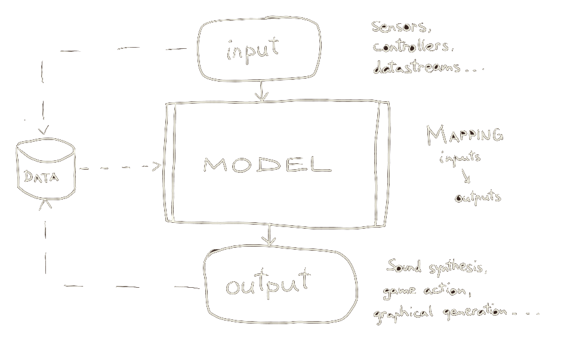
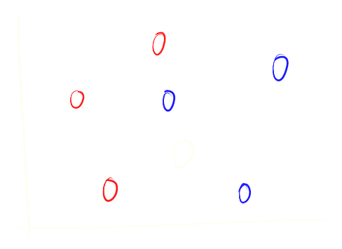

class: center, middle .title[Interactivity Design 1] <br/><br/> .subtitle[iML w/ Wekinator] <br/><br/><br/><br/><br/><br/> .date[Oct 2026] <br/><br/><br/> .note[Created with [Liminal](https://github.com/jonathanlilly/liminal) using [Remark.js](http://remarkjs.com/) + [Markdown](https://github.com/adam-p/markdown-here/wiki/Markdown-Cheatsheet) + [KaTeX](https://katex.org)] ??? Author: Grigore Burloiu, UNATC --- name: toc class: left # ★ Table of Contents ★ <!-- omit in toc --> 1. [ML representations](#ml-representations) 2. [Supervised learning](#supervised-learning) 3. [Classification](#classification) 4. [Inputs](#inputs) 5. [Wekinator example](#wekinator-example) <!-- Comment out the next slide if you don't want the Table of Contents link --> --- layout: true .toc[[★](#toc)] --- name: ml-representations class: left # ML representations .right-column[ <iframe width="100%" src="https://www.youtube.com/embed/LSS_bos_TPI" title="YouTube video player" frameborder="0" allow="accelerometer; autoplay; clipboard-write; encrypted-media; gyroscope; picture-in-picture" allowfullscreen></iframe> ] a data**point** is a [vector](https://natureofcode.com/book/chapter-1-vectors/) <br/><br/><br/><br/><br/><br/> -- a **dataset** is a collection of points / vectors <br/><br/><br/><br/><br/><br/> -- a **model** *fits* the dataset onto a [*latent space*](https://stats.stackexchange.com/a/442360) --- name: types-of-ml class: left ## Types of ML *how* is the model trained? ~ *how* is the latent space formed? -- supervised (90% of this semester) - based on user-labelled data -- unsupervised (9%) - finding underlying structure in data -- reinforcement (?) - desired actions based on feedback from the environment --- name: supervised-learning class: left # Supervised learning input-output pairs are learned together input ~ *data*, output ~ *label* -- → input+output ~ *labelled data* <p></p> --- ## sup.ML tasks .left-column[ classification <p></p> ] -- .right-column[ regression <p></p> ] -- <br/><br/><br/><br/><br/><br/><br/><br/><br/><br/> temporal modelling - classification/regression *over time* --- name: classification # Classification assign a *label* to an input - in: raw data and/or *features* - out: label_1 OR label_2 OR ... label_n --- name: inputs # Inputs time series data [examples @ Wekinator](http://www.wekinator.org/examples/#Pick_Choose_Inputs) - misc: [hand tracking (Python)](https://github.com/RVirmoors/cc-patterns/tree/main/Python/HandTracking_OSC), [Mediapipe in Max](https://github.com/lysdexic-audio) --- name: wekinator-example # Wekinator example [image classification : sound](https://github.com/RVirmoors/cc1/blob/master/ml/classification.maxpat)  --- ## Wekinator: new project 1. listening port 2. number of inputs - (features: MFCCs, pixel brightness, x,y,z coords etc.) 3. number of outputs - (how many things are we controlling?) 4. outputs type - classifier, continuous (regression), DTW (temporal) 5. target IP:port --- ## Wekinator: usage 1. set desired output value(s) 2. Start recording inputs ... stop 3. again 1.-2. for all desired in-out combinations 4. Train: the ML model 5. Run: now inputs directly control the outputs